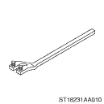
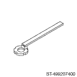
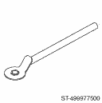

|
ILLUSTRATION |
TOOL NUMBER |
DESCRIPTION |
REMARKS |
|
|
499977400 |
CRANK PULLEY WRENCH |
Used for stopping rotation of crank pulley of the 2.0L model when loosening/tightening the crank pulley bolt. |
|
|
499977100 |
CRANK PULLEY WRENCH |
Used for stopping rotation of crank pulley of the 2.5 L model when loosening/tightening the crank pulley bolt. |
|
 |
18231AA010 |
CAM SPROCKET WRENCH (For LH) |
• Used for removing and installing cam sprocket (LH) of the SOHC model. • CAM SPROCKET WRENCH (499207100) can also be used. |
|
 |
499207400 |
CAM SPROCKET WRENCH (For RH) |
Used for removing and installing cam sprocket (RH) of the SOHC model, and cam sprocket (exhaust) of the DOHC model. |
|
 |
499977500 |
CAM SPROCKET WRENCH |
Used for removing and installing the cam sprocket (intake) of the DOHC model. |